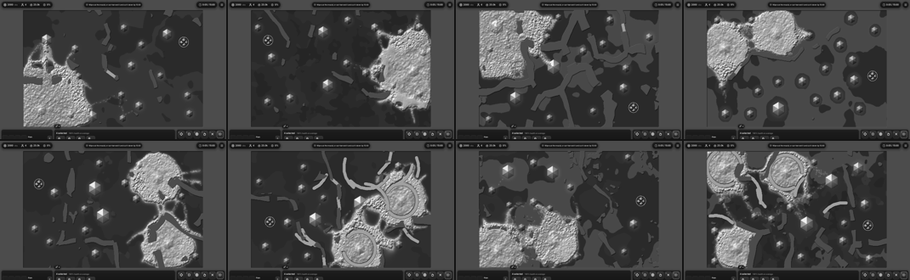
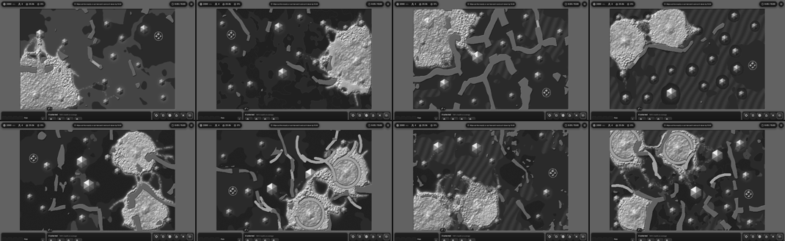
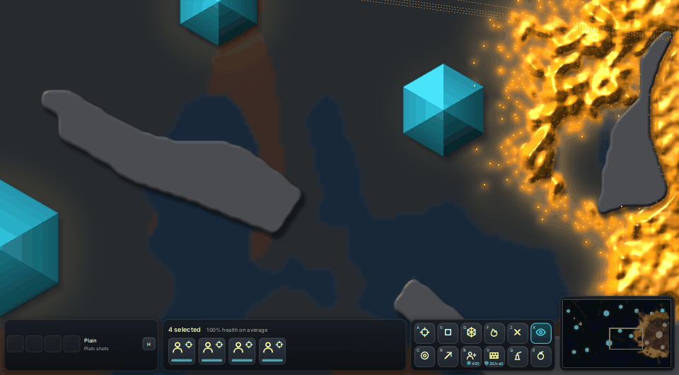
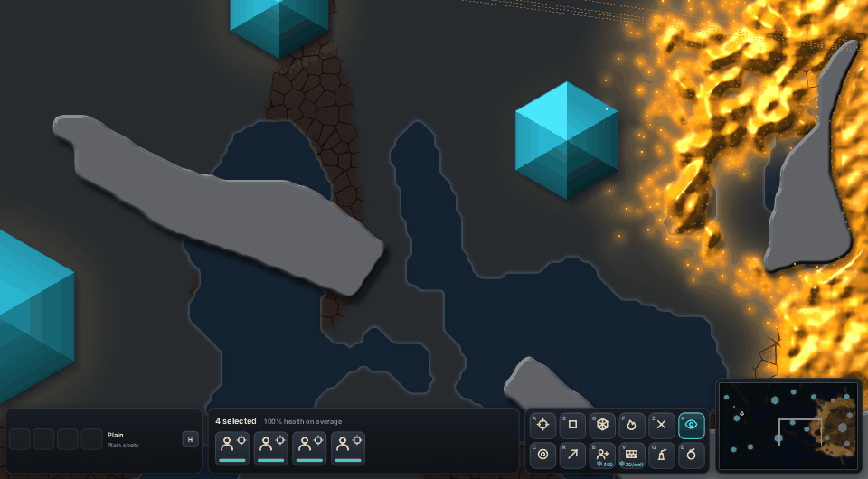
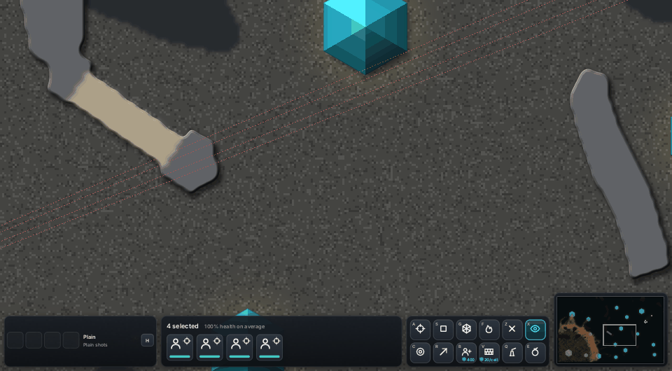
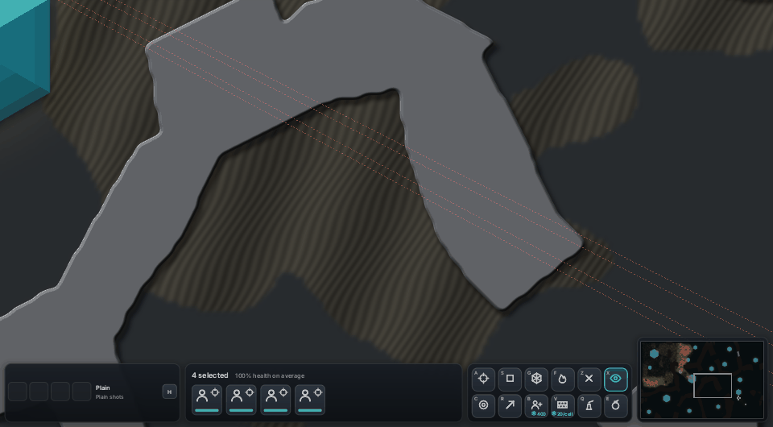
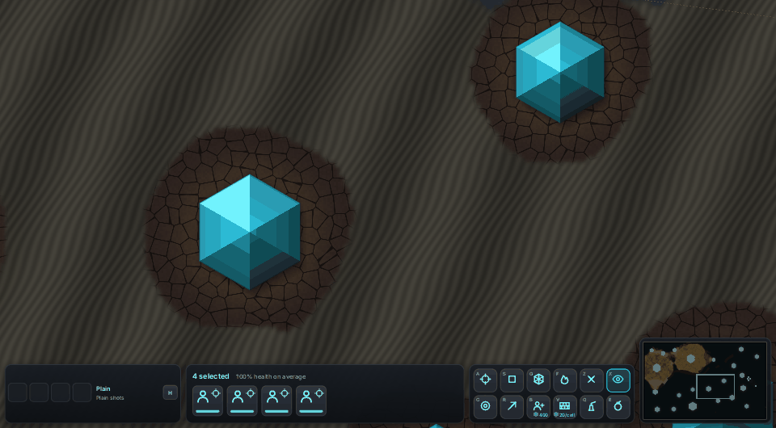
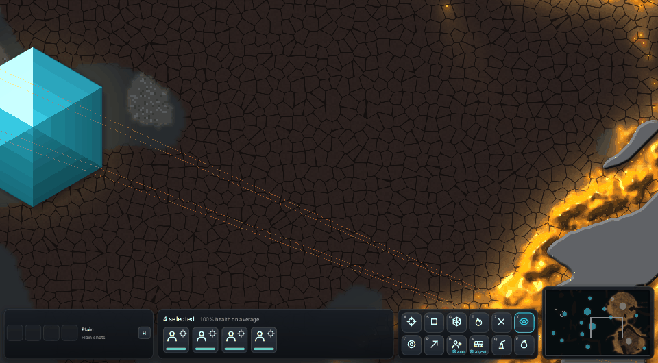

The planets build their biomes from sand, clay, barren ground, water and rock, and drawn as flat colours they all looked alike. Each soil now has its own material, read from the soil field cell by cell: sand has wind ripples and long dune swells, clay dries into plates with dark cracks, barren ground is pale ash with a dry speckle, water is deep and dark with a smooth edge and a lighter shore, and rock stands raised with a lit rim toward the light.
Before is main's ground drawing; after is this change. Both run the planet generator from #277, seed 1. The texture fades out under the slime, so the slime stays the brightest, most detailed thing on screen.
Top row: Barrens, Marsh, Canyon, Dunes. Bottom row: Claypan, Thicket, Spires, Core.








On llvmpipe (Dunes, bench 8 s, idle hand, 1280 x 800, three alternating pairs), the GPU tail p50 goes from 74.3-75.5 ms to 80.3-81.6 ms. That is about 6 ms (8%), mostly reading the 16 cells round each ground pixel. It hasn't been timed on the GTX 1070 yet; that whole frame was under 2.6 ms p95 this morning.